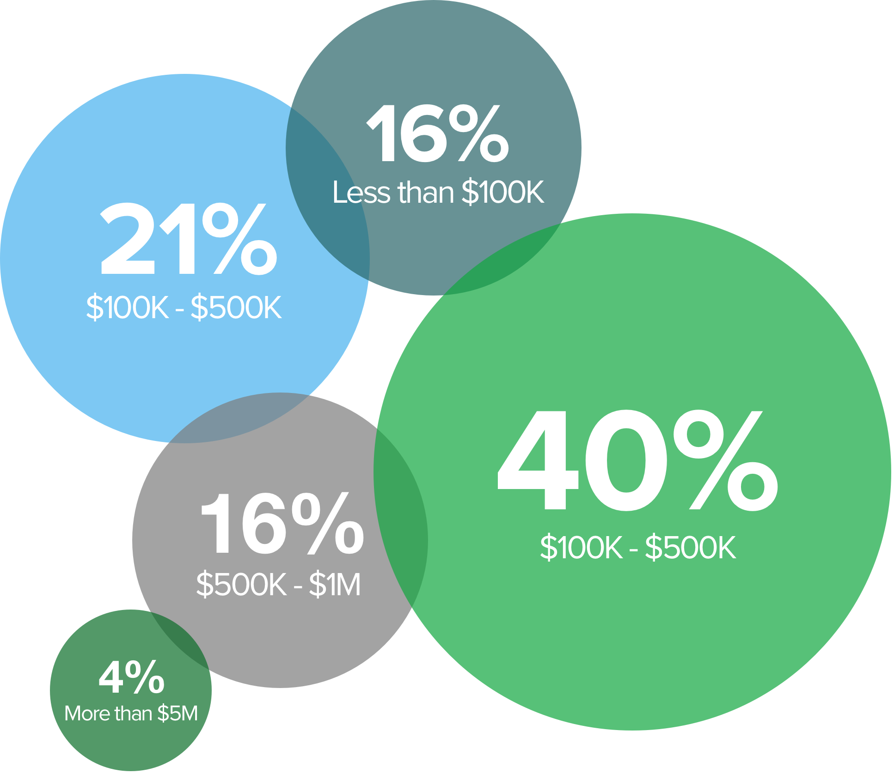
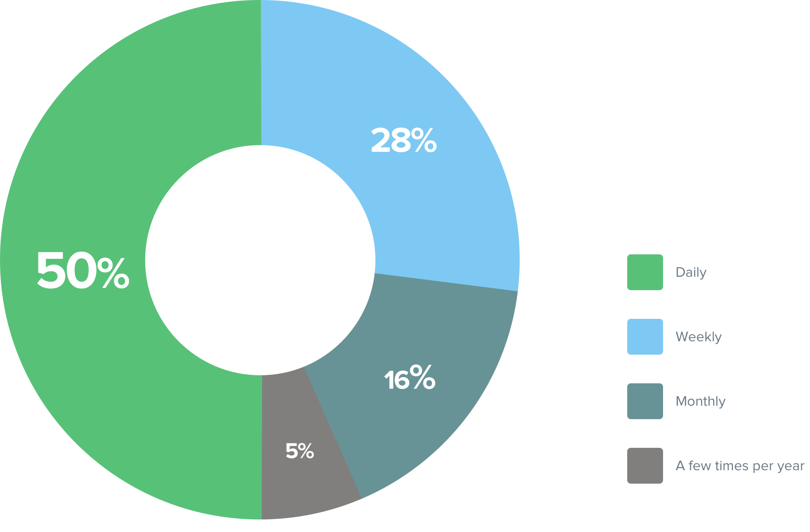

The Results of Our User Survey and Some Exciting New Developments
A few months ago, we asked for your feedback about Pulse. Here’s what we learned, along with an update on a few exciting new developments.
As many of you know, Pulse was purchased by Simple Focus about a year ago. Since we took over, we’ve been working on ideas for ways we can make Pulse truly great instead of just maintaining it.
A few months ago, we asked you to tell us about yourselves, your businesses and the ways that you use Pulse. We talked to more than 10 percent of our users, and we’re excited to share both the results of our research and some exciting new developments with you.
Here’s what we learned:
Seventy-eight percent of people who responded to the survey are current Pulse users.
And, more than half of you have used Pulse for at least one year.
Pulse is primarily used by small businesses.
We were surprised to find out how many Pulse users - more than 90 percent of you - are using Pulse to manage cash flow for a small business. Most companies that use Pulse are using it to manage $5 million or less annually, but the majority of those are managing between $100,000 and $1 million annually.

Pulse users are business leaders.
Pulse users hold leadership positions in their companies, with 76 percent of respondents identifying themselves as business owners and 17 percent identifying themselves as managers.
Pulse customers are mostly creative and service businesses.
Interestingly, the majority of users – 68 percent, to be exact - work in some sort of creative or service business. Almost all of you are in service-based businesses (like law firms, accounting firms and advertising and marketing agencies) but we also have customers that use Pulse in the retail, manufacturing, healthcare and restaurant industries.
Pulse is integral to your business.
We also didn’t realize how often you look for insight into your cash flow: three quarters of you use Pulse to manage or predict cash flow on a daily or weekly basis.

We were less surprised about the things that you like about Pulse, because they’re some of the things we like best about it, too. You like that Pulse is cloud-based, and many of you told us that Pulse was easy to set up and use. Overall, you love that Pulse does what it’s supposed to do – help you manage your cash flow – well, so that you can make smarter business decisions.
You also weren’t shy about letting us know where there was room for improvement.
We know as well as you do that Pulse has been neglected for too long. There haven’t been many updates or new features in forever, and we apologize for that. We hear you, and we’re working on it. The results of this survey have confirmed some of our decisions regarding new features (more on that below) and have given us ideas for future updates:
- You want software integration.
So you’re going to get it – soon. Thirty percent of you said that Pulse would be a lot better if it allowed for integration with your accounting software or Excel spreadsheets. Keeping your data current in more than one place is time consuming and difficult. So, we’re fixing it. By the end of September, you’ll be able to import CSVs with your Pulse account, and we’re working on adding integration with accounting software in the near future.
- You want Pulse to be more reliable.
We know that Pulse can be frustratingly slow and unreliable for less than five percent of our users. This will be fixed within a month.
- You want interface improvements.
One of the best things to come out of our research is a laundry list of ideas for improvements to Pulse’s interface.
So what does this mean?
It means that we’ve got a lot of work to do.
You’ll see some of that work very soon. We’re rolling out two big, new features this month: software integration that will let you use Pulse with your existing accounting software and performance improvements.
Other fixes - like some of the UI improvements – will take us a little longer. The important thing is that we’re working on them, and we’ll let you know about them as they happen. If you’ve got any other ideas for how we can make Pulse better, we’d love to hear them.